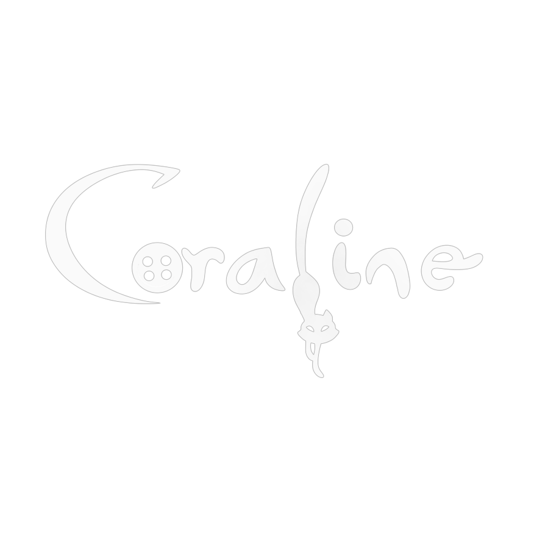
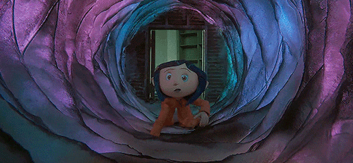
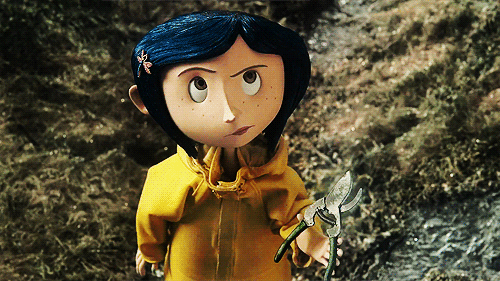

<!DOCTYPE html>
<html></html>
<head>
    <meta charset="UTF-8">
    <title>Coraline</title>
    <link rel="stylesheet" href="index.css">
    <link rel="stylesheet" href="../../styles/global.css">
    <link rel="icon" type="image/x-icon" href="../images/peq.png">
    <link rel="stylesheet" href="https://cdnjs.cloudflare.com/ajax/libs/font-awesome/6.4.2/css/all.min.css">
</head>
<header>

    <div class="header-container">
        <div class="logo-container">
            
        </div>

        <nav>
            <ul>
                <li><a href="index.html">Home</a></li>
                <li><a href="../sobre/sobre.html">Sobre nós</a></li>
                <li><a href="../contato/contato.html" class="contato">Contato</a></li>
                <li><a href="../projetos/projetos.html">Projetos</a></li>
            </ul>
        </nav>
    </div>

</header>
<body>

    <div class="banner">
        <picture>
            <source media="(max-width: 720px)" srcset="../images/gif2.png">
            <source media="(max-width: 950px)" srcset="../images/gif3.png">
            
        </picture>
    </div>

    <div class="main">
        <h1> <strong> Bem-vindo </strong> ao </h1>
        <h2> intrigante e sombrio universo de Coraline, uma obra-prima do renomado escritor Neil Gaiman. Publicado em 2002, o livro conquistou leitores de todas as idades ao apresentar uma história envolvente, repleta de mistério, fantasia e suspense. Adaptado para o cinema em 2009 pelo estúdio Laika, o filme em stop-motion trouxe ainda mais reconhecimento à narrativa, tornando-se um clássico do gênero.</br> Mais do que uma simples história de terror infantil, Coraline aborda temas profundos, como a importância da coragem, a valorização da realidade e o perigo das falsas promessas. A história nos ensina que nem sempre o que parece perfeito realmente é e que, por mais que nossa vida tenha desafios, ela é única e preciosa. Com sua atmosfera gótica, personagens marcantes e uma narrativa envolvente, Coraline tornou-se um marco da literatura contemporânea e uma referência na cultura pop. Se você está prestes a embarcar nessa leitura ou revisitar essa história fascinante, prepare-se para uma experiência única e cheia de surpresas.</br>Boa leitura e aproveite essa jornada inesquecível!</h1>
        
    </div>

    <a href="#" class="top"> &#8593;</a>
    
    <footer>
        <p>Lívia e Maria © 2025. </p>
        
        <div class="icones">
            <i class="fa-brands fa-instagram"></i>
            <i class="fa-brands fa-github"></i> <a href="//github.com/liahqz"></a> 
        </div>
    </footer>
</body>
</html>